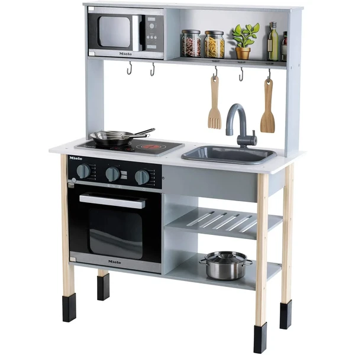
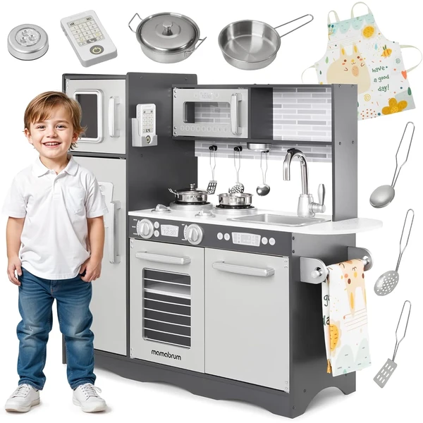
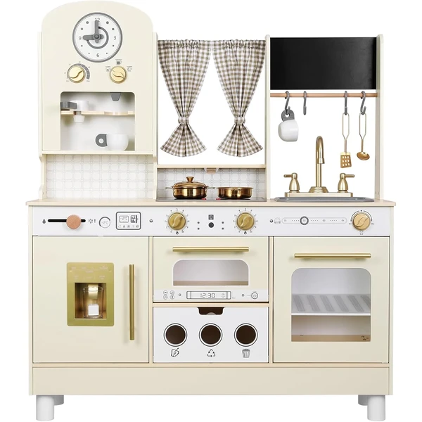
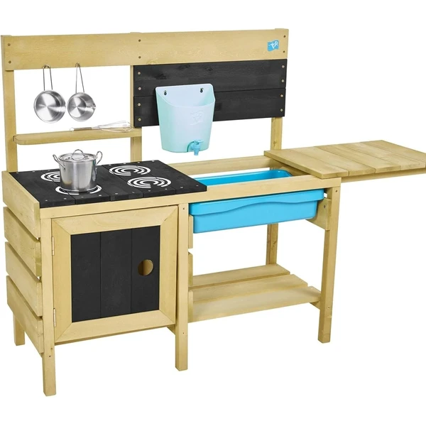
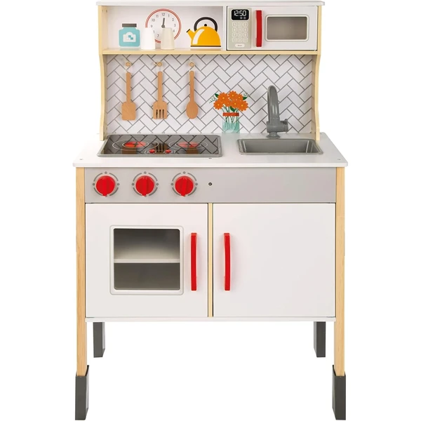
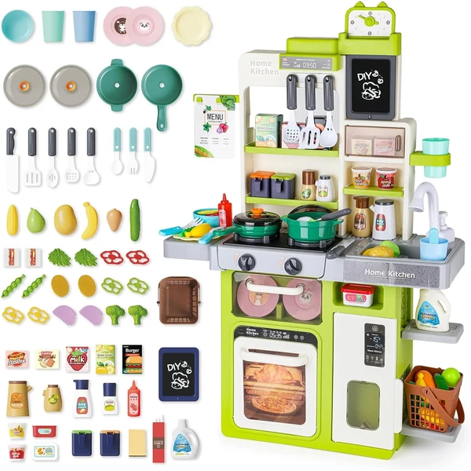
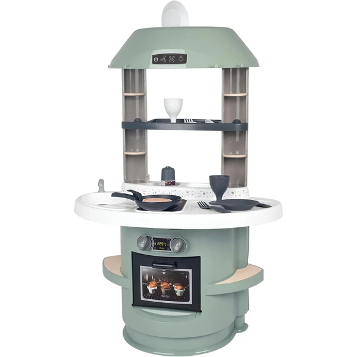

Las cocinitas de juguete son uno de los regalos estrella del juego simbólico a partir de los 3 años, cuando al niño le encanta imitar lo que hacen los adultos. Preparar comidas, poner la mesa o servir un café imaginario le permite recrear escenas de la vida cotidiana a su manera. Suelen incluir accesorios como cazuelas, alimentos o utensilios, y funcionan igual de bien para jugar solo que en compañía. En esta selección encontrarás cocinitas y accesorios pensados para niños de 3 años.
¿Qué desarrollan las cocinitas?
Detrás del juego de cocinar hay un ejercicio muy rico de imitación y lenguaje.
- Juego simbólico
- Imaginación
- Lenguaje
- Habilidades sociales
- Autonomía
- Coordinación

Theo Klein Cocina Miele
Una cocinita de madera blanca con diseño de Miele que incluye placa de cocción con luz y sonido, microondas, fregadero extraíble y utensilios de metal y madera. Dimensiones: 70 cm x 30 cm x 91 cm.
⭐ ¿Por qué nos gusta?
- ✔ Placa de cocción con luz y sonido realistas.
- ✔ Diseño premium de marca Miele, madera de calidad.
- ✔ Incluye fregadero extraíble y utensilios metálicos.
💬 Lo que más destacan las familias
Una de las cosas más comentadas es lo realistas que resultan la luz y el sonido de la placa, algo que engancha a los niños desde el primer día. También se agradece que la madera aguante bien el uso diario sin que las piezas se desajusten.
Ver en Amazon

Mamabrum Cocinita LED
Una cocinita de madera con luces LED, doble hornilla, grifo giratorio, horno, microondas y múltiples estantes de almacenamiento. Altura: 82 cm, ancho: 60 cm, apta para que varios niños jueguen juntos.
⭐ ¿Por qué nos gusta?
- ✔ Luces LED realistas, botones que hacen clic.
- ✔ Espacio para varios niños, muchos estantes organizadores.
- ✔ Refrigerador espacioso incluido.
💬 Lo que más destacan las familias
Se repite bastante el comentario de que las luces y los botones mantienen entretenidos a los niños durante ratos largos. Los padres con más de un hijo destacan que hay sitio de sobra para que jueguen varios a la vez sin pelearse por el turno.
Ver en Amazon

EDUBEBO Cocina Ajustable
Una cocinita de madera blanca con altura ajustable en tres niveles (99, 107 y 114 cm), placa de cocción con sonido, máquina de hielo realista y funciones interactivas. Crece con el niño de 3 a 8 años.
⭐ ¿Por qué nos gusta?
- ✔ Altura ajustable, acompaña el crecimiento.
- ✔ Máquina de hielo y perillas giratorias realistas.
- ✔ Diseño antivuelco, seguridad garantizada.
💬 Lo que más destacan las familias
No es raro encontrar comentarios sobre lo práctico que resulta poder subir la altura según va creciendo el niño, así sigue jugando cómodo con los años. También gusta la máquina de hielo, que suele ser de las funciones favoritas.
Ver en Amazon

TP Toys Mud Kitchen
Una cocinita de barro para exterior hecha de pino certificado FSC, con placa de cocción, horno, grifo de trabajo, recipiente de agua extraíble y mucho espacio para utensilios. Pensada para juego con agua, arena y barro.
⭐ ¿Por qué nos gusta?
- ✔ Madera FSC certificada, construida para durar.
- ✔ Grifo funcional y recipiente de agua extraíble.
- ✔ Perfecta para juego desordenado al aire libre.
💬 Lo que más destacan las familias
Entre las familias que la tienen se comenta que es perfecta para dejar que los niños se manchen a gusto en el jardín, jugando con barro y agua sin miedo a estropear nada dentro de casa. El grifo que funciona de verdad es de lo que más gusta.
Ver en Amazon

WOOMAX Cocina con Campana Extractora
Una cocinita de madera con vitrocerámica eléctrica, campana extractora, microondas, horno, fregadero, luz y sonido. Incluye salero, pimentero y 3 utensilios. Dimensiones: 59,5 cm x 30 cm x 94,5 cm.
⭐ ¿Por qué nos gusta?
- ✔ Campana extractora funcional, detalles realistas.
- ✔ Vitrocerámica eléctrica con luz y sonido.
- ✔ Bordes y esquinas redondeadas, segura para niños.
💬 Lo que más destacan las familias
Quienes la han comprado destacan lo bien pensados que están los detalles, como la campana extractora, que le da un aire distinto a las cocinitas más sencillas. Los niños disfrutan imitando gestos que ven en casa, como encender la vitro o abrir el microondas.
Ver en Amazon

deAO Cocina con Agua Circulante
Una cocinita de plástico con sistema de fregadero de presión manual para agua circulante realista, estufas con vapor y luz, luz y sonido, y muchos accesorios. Dimensiones: 56 cm x 22 cm x 80 cm.
⭐ ¿Por qué nos gusta?
- ✔ Sistema de agua con presión manual, muy realista.
- ✔ Vapor que sube desde la placa, luz como fuego real.
- ✔ Muchos accesorios y comida de juguete incluida.
💬 Lo que más destacan las familias
Muchos padres coinciden en que el sistema de agua es lo que más engancha, porque el niño puede abrir y cerrar el grifo una y otra vez como si fuera de verdad. También se valora que venga con bastantes accesorios para completar el juego desde el primer momento.
Ver en Amazon

Smoby Cocina Nova
Una cocina compacta con placa, horno, fregadero y una pequeña zona de comedor, con 13 accesorios incluidos como platos, vasos y un molinillo de sal y pimienta con sonido. Diseño de colores actuales que encaja en cualquier habitación.
⭐ ¿Por qué nos gusta?
- ✔ Diseño compacto, ideal para espacios reducidos.
- ✔ Incluye 13 accesorios, entre ellos vajilla completa.
- ✔ Molinillo de sal y pimienta con sonido realista.
💬 Lo que más destacan las familias
Entre los comentarios más habituales aparece lo bien que encaja el diseño de colores actuales en cualquier habitación. El tamaño compacto también se valora para quienes no disponen de mucho espacio.
Ver en Amazon